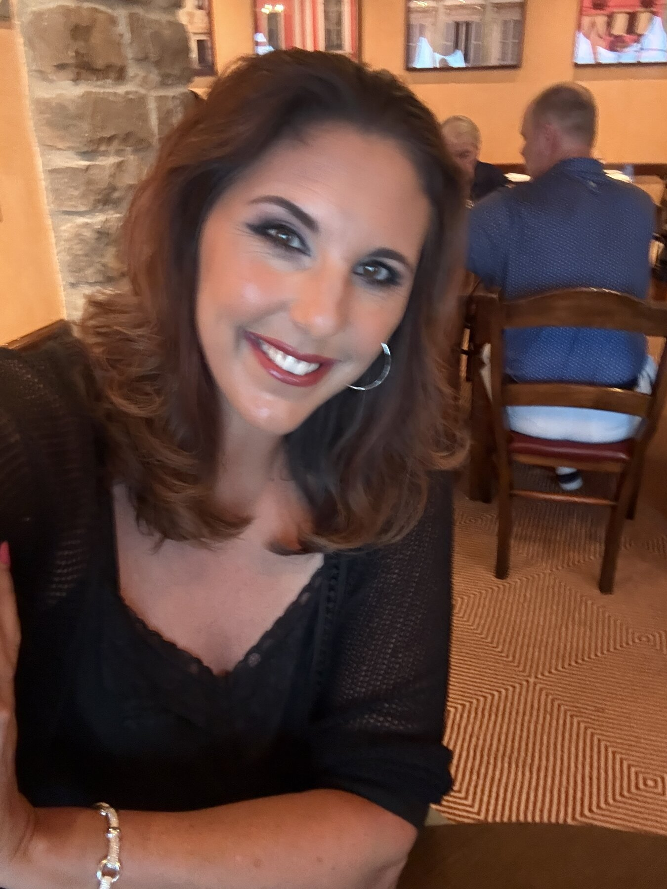
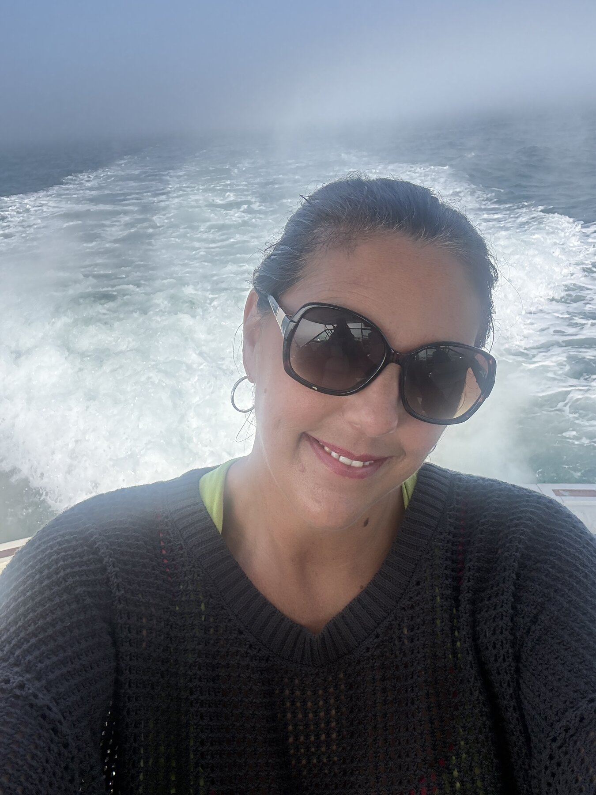

WNBA CHAMPION · OLYMPIC GOLD MEDALIST · UCONN LEGEND
A podcast with Kara Wolters. Real talk on the plot twists nobody prepares you for — on the court, in the locker room, and in life after the buzzer.


About Kara
Kara Wolters is one of only a handful of players in basketball history to complete the sport's "triple crown" — an NCAA National Championship, a WNBA Championship, and an Olympic Gold Medal.
At UConn (1993–1997), Kara anchored a Huskies team that went 132-8, capped by a perfect 35-0 season and the 1995 National Championship. She left Storrs as the program's all-time leading rebounder and shot-blocker, and was named AP College Player of the Year in 1997.
Drafted by the Houston Comets in 1999, she went on to win a WNBA title as a rookie, added Olympic gold with Team USA in 2000, and played for the Indiana Fever and Sacramento Monarchs before being inducted into the Women's Basketball Hall of Fame in 2017.
Today she's an in-studio analyst for UConn women's basketball on SNY, runs her Dream Big Basketball Camps, and — as of now — hosts a podcast about what actually happens after the highlight reel ends.
The Podcast
Kara Wolters has spent her whole life adjusting to curveballs nobody sees coming. Now she's talking about it out loud. Oh F*ck, Now What? is the show for the moments life doesn't warn you about — career pivots, comebacks, parenting plot twists, and everything in between. Unfiltered, funny, and real, with guests who've been through it too.
No scripts, no spin — just the honest version of the story.
Athletes, coaches, and everyday people navigating their own "now what" moments.
Drop your release schedule here.
Watch
Full episodes and clips land here. See js/videos.js to add new ones —
no HTML editing required.
Photos